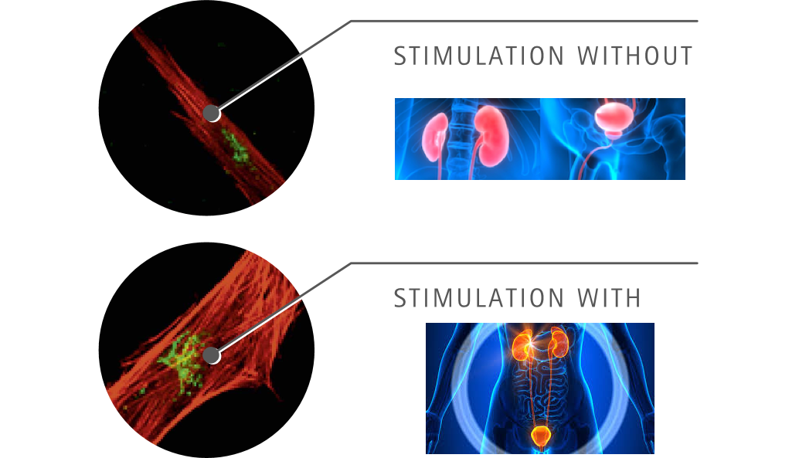
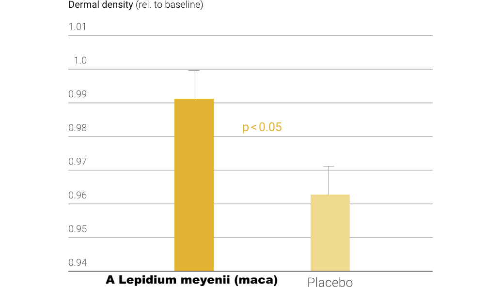

Esqueça o Azulzinho do mal! Homens com mais de 50 usam esse poderoso estimulante natural 7x mais potente para virilidade.
Essa novidade é recomendada por especialistas e foi utilizada por mais de 90 mil Brasileiros para acabar com a disfunção.
Sebastião Serafim
São Paulo/SP - Se você está fazendo uso de fórmulas milagrosas na esperança de eliminar os sintomas da disfunção e recuperar a virilidade, pare imediatamente. Isto porque foi comprovado pelo presidente da Academia Espanhola de Urologia Dr. Julián Conejo-Mir, que essas fórmulas milagrosas que prometem acabar com a disfunção erétil, pouca virilidade e baixo rendimento realmente não funcionam.
O motivo é simples: A disfunção erétil só pode ser tratada de dentro para fora e com UM ÚNICO SUPER ALIMENTO. “(essas fórmulas milagrosas) não podem ser absorvidos pelo corpo do homem, é puro marketing", aponta.
Foi este SUPER ALIMENTO que o aposentado de 64 anos - Reginaldo Almeida usou após ler o estudo “The Benefits Of Maca For Male Dysfunction” do Dr. Gustavo F. Gonzales, Urologista e pesquisador da Universidade de São Paulo na área de Urologia Avançada.Veja nesta matéria como o aposentado de 64 anos conseguiu melhorar seu desempenho em 94% através da suplementação indicada pelos especialistas:
“Trabalhando há mais de 37 anos como caminhoneiro eu já tinha feito o uso de tudo que você possa imaginar. Percebi que nada tratava o problema pela RAIZ. Minha virilidade estava despencando, foi aí que estudei e entendi este super alimento que salvou minha vida”, conta.
Azulzinho é passado! Esse super alimento "restaura" a virilidade, recuperando a masculinidade do homem igual aos seus dias de glória
O que tem de especial neste alimento que restaura tanto?
Segundo especialistas, este alimento não é qualquer comida que se pode comprar no mercado.
Na verdade, trata-se de uma substância conhecida, porém má utilizada: A Lepidium meyenii (maca). Mas não aquelas comuns que você vê em farmácia - essas são cheias de farinha e não contém a quantidade certa de proteína.
Estamos falando da Lepidium meyenii (maca) na forma correta, e ainda escassa no mercado.
"Nem todos os estimulantes a base de Lepidium meyenii (maca) são iguais e nem todos atuam da mesma maneira. A Lepidium Meyenii (maca) pode funcionar para muitos problemas, mas para a disfunção erétil somente a genuína que funciona”, comenta.
Este tipo específico é o mesmo que o Dr. Julián Conejo-Mir, presidente da Academia Espanhola de Urogologia usa: lepidium meyenii, mais conhecido como maca peruana genuína.
Genuína porque existem milhares de estimulantes feitos de lepidium meyenii, mas só o tipo certo pode agir diretamente na saúde masculina. Esta é a lepidium meyenii genuína, a combinação correta para conseguir os melhores resultados.
O Dr. Gustavo F. Gonzales, pesquisador da USP explica como este super alimento age:
- “A lepidium meyenii é composta por micro particulas de lepidium meyenii, que quando ingeridos conseguem sim ser absorvidos";
- "Para desmistificar, é comprovado que as micro particulas de lepidium meyenii quando ingeridos conseguem atravessar a mucosa intestinal";
- "(as partículas de lepidium meyenii) caem na corrente sanguínea e são distribuídos em diferentes partes do corpo".
Por causa deste funcionamento, esse composto chegou ao Brasil com o nome de “Maxtamina" por dar renovação da virilidade que só a lepidium meyenii genuína pode trazer.
O Dr. brasileiro explica o funcionamento da lepidium meyenii genuína:
Na entrevista que pode ser ouvida na íntegra no site da rádio CBN, o especialista afirma:
"Como o corpo não está produzindo (testosterona) mais, ele precisa de estimulo. Quando essas micro particulas de lepidium meyenii (maca) chegam no corpo, ele tem esse estímulo que precisa. Ele começa a produzir mais testosterona, aumentando a virilidade, reduzindo a indisposição em até 94%, aumentando a testosterona do corpo, seus níveis de virilidade, diz.
O Dr. Gustavo F. Gonzales, farmacêutico, pesquisador da Universidade de São Paulo (USP) disse que os efeitos começam em 4 semanas e em 8 semanas eles são mais significativos.
ANVISA aprova Maxtamina: a Maca Peruana Genuína vendida no Brasil

A Maca Peruana Genuína age diretamente no organismo masculino. No Maxtamina ela é aprovada pela Anvisa nos termos da RDC 240 de 26/07/2018, registro 673650001. Avaliada como 100% Seguro para o consumo da população. A fórmula inovadora apresenta um enorme potencial contra a disfunção e falta de virilidade.
Estudos apontam que o Maxtamina pode:
- Aumentar o hormônio masculino (testosterona);
- Aumento da energia e disposição masculina;
- Reduzir os sintomas da disfunção;
- Melhora do humor e bem-estar;
- Aumento do Vigor;
Funciona mesmo? Entrevista com Reginaldo, o aposentado de 64 anos e disposição e virilidade de 30:
Redação: Reginaldo, você ficou muito conhecido pela sua transformação. Você pode nos contar como tudo isso aconteceu?
Reginaldo: "Tudo começou quando percebi que nada do que eu estava fazendo fazia efeito. Foi aí que estudando percebi o que estava sendo feito de errado: Meu prganismo estava sendo hidratado superficialmente. Era tudo momentâneo."
Redação: Como você conheceu este novo produto?
Reginaldo: "Pesquisando! Escutei uma reportagem na rádio CBN sobre a suplementação da maca peruana genuína e também vi os estudos referentes. Usei a internet para procurar de uma forma mais certeira e achei a minha própria fórmula da juventude! Ah, também entendi porque nenhum desses estimulantes convencionais fajutos de farmácia funcionaram antes."
Redação: O que você mais gostou no produto?
Reginaldo: "O que eu mais gostei foi a segurança que eu sentia em mim mesmo. A firmeza que senti após um tempo de uso. Poder acordar um dia, olhar no espelho e me sentir poderoso de novo. Isso não tem preço. Imagine só... poder acordar e ver que o relógio está girando ao contrário!"
ALERTA DE SAÚDE: cuidado com estimulantes falsificados
É importante ressaltar que o produto verdadeiro não se encontra em farmácias. Como dito pelo especialista, nem toda maca peruana é genuína é do tipo certo para o homem. Isto porque muito mais barato para as indústrias continuarem investindo em estimulantes que não funcionam e suplementos que misturam tudo que “rejuvenesce” na mesma fórmula e em quantidades irrelevantes junto com placebo (farinha, no melhor dos casos).
E é por isso que você continua fraco e sem energia dia após dia...mesmo gastando pequenas fortunas em consultas e tratamentos por aí.
Só restam poucas unidades com desconto
O site oficial do Maxtamina diz que eles estão com estoque limitado até as remarcações de preço que virão por conta das políticas anti-fraude. Por isso, é recomendado adquirir o produto até o final deste mês e garantir a verdadeira Maca Peruana Genuína, mais conhecido como Lepidium meyenii genuína (maca).
Os fabricantes oficiais oferecem também uma garantia de satisfação de 30 dias: ou você tem resultados com tratamento do Maxtamina, ou eles compram todos os potes de você, pelo mesmo valor que você pagou!
Se você quiser adquirir o Maxtamina com desconto de 50% e garantia de eficácia, clique no botão abaixo para ir ao site oficial.
OFERTA ESPECIAL: Conseguimos um desconto de 30% e FRETE GRÁTIS para nossos leitores, limitado a duas compras por CPF.

OFERTA LIMITADA!

Enquanto escrevíamos essa matéria, o estoque era de 321 peças, então sinceramente acho que ele não vai durar muito.
COMENTÁRIOS DOS LEITORES
O Maxtamina É incrível, catuaba nunca mais!
Depois que conheci esse macete, a patroa não quer saber de outra coisa!!
-Romulo Ferreira, Atibaia SPO Maxtamina É incrível, após começar não quero mais parar.
Depois que conheci esse macete, a patroa não quer saber de outra coisa!!
-Ricardo Santos, Curitiba PR Atualização: Descontos de 30% ainda disponíveis. Promoção válida até acabarem os estoques!
Atualização: Descontos de 30% ainda disponíveis. Promoção válida até acabarem os estoques!